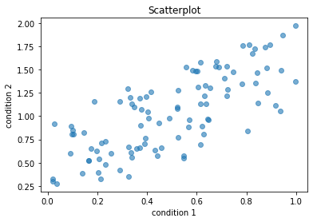

Demo notebook
Demo notebook¶
We can also create parts of our Jupyter Book based on Jupyter Notebooks.
Let’s simulate data for two conditions and print their first ten rows:
import numpy as np
cond_1 = np.random.rand(100)
print(f'Condition 1 = {cond_1[:10]}')
cond_2 = cond_1 + (np.random.rand(100))
print(f'Condition 2 = {cond_2[:10]}')
Condition 1 = [0.44195952 0.32663371 0.52127095 0.83415175 0.63534769 0.68904697
0.4061897 0.33379377 0.5559273 0.17455155]
Condition 2 = [0.57130797 0.6720045 1.09545695 1.72475407 1.32898377 1.52216641
0.97496571 1.19804648 1.52530203 0.65288282]
We can also display in our Jupyter Book more complex datastructures, like pandas dataframes:
import pandas as pd
df = pd.DataFrame(
{'condition_1': cond_1, 'condition_2': cond_2},
index=np.arange(100)
)
df[:10]
| condition_1 | condition_2 | |
|---|---|---|
| 0 | 0.441960 | 0.571308 |
| 1 | 0.326634 | 0.672005 |
| 2 | 0.521271 | 1.095457 |
| 3 | 0.834152 | 1.724754 |
| 4 | 0.635348 | 1.328984 |
| 5 | 0.689047 | 1.522166 |
| 6 | 0.406190 | 0.974966 |
| 7 | 0.333794 | 1.198046 |
| 8 | 0.555927 | 1.525302 |
| 9 | 0.174552 | 0.652883 |
And of course, we can display plots as well!
import matplotlib.pyplot as plt
plt.scatter(cond_1, cond_2, alpha=.6)
plt.xlabel('condition 1')
plt.ylabel('condition 2')
plt.title('Scatterplot')
plt.show()

import ipywidgets as widgets
widgets.IntSlider()
from IPython.display import display
w = widgets.IntSlider()
display(w)
a = widgets.FloatText()
b = widgets.FloatSlider()
display(a,b)
mylink = widgets.jslink((a, 'value'), (b, 'value'))
#slider.close()
from ipywidgets import Layout, Button, Box
items_layout = Layout( width='auto') # override the default width of the button to 'auto' to let the button grow
box_layout = Layout(display='flex',
flex_flow='column',
align_items='stretch',
border='solid',
width='50%')
words = ['correct', 'horse', 'battery', 'staple']
items = [Button(description=word, layout=items_layout, button_style='danger') for word in words]
box = Box(children=items, layout=box_layout)
box